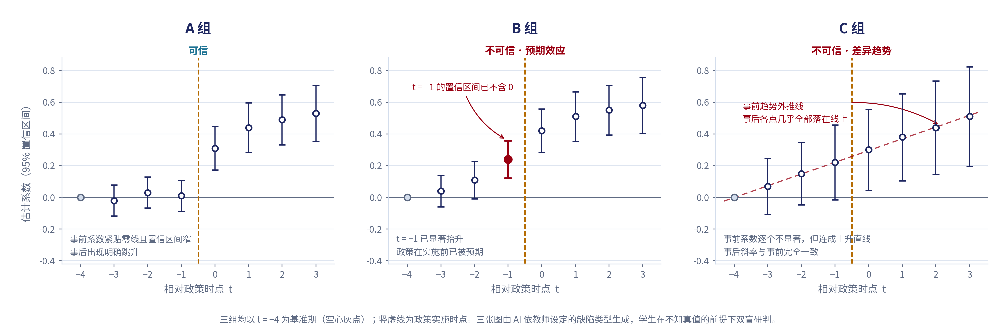
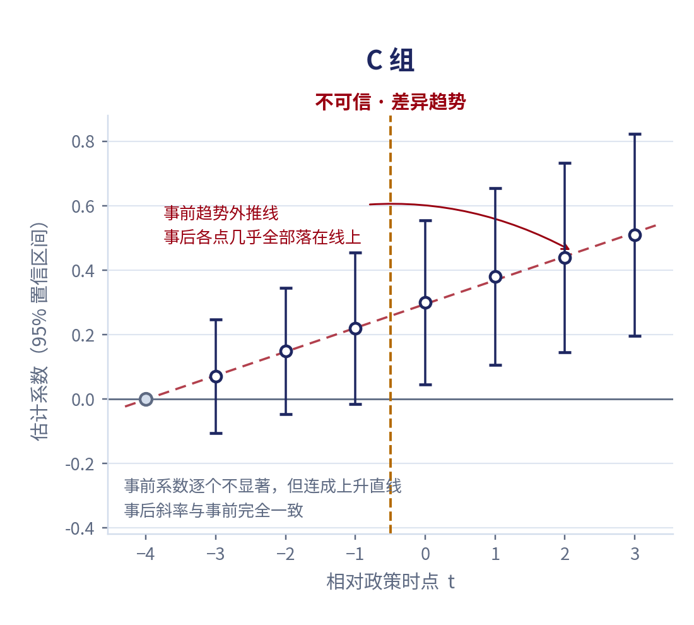

一、事件研究基准期探索器
选一组案例，再换基准期。注意右侧读数中"事后首期效应"的变化幅度
红色实心区间表示该事前系数的 95% 置信区间已不含 0；红色虚线为事前趋势外推线。 标准误按 σ√|k−k₀| 近似重算，用于演示基准期的影响，非真实估计结果。
读数
这三组的真值
A 组 真实满足平行趋势
B 组 预期效应型伪平行
C 组 差异趋势型伪平行
课堂上真值不公开，学生双盲研判后教师才揭示。 此处公开是为了让访问者看清设计意图。
二、三组案例的静态对照图
课堂发放版本：统一以 k₀=−4 为基准期，使三类病灶各自可见

A 组 · 可信
事前系数紧贴零线且置信区间窄，事后出现明确跳升。换任何基准期结论都不变—— 对基准期不敏感，是可信设计的签名特征。
B 组 · 预期效应
t = −1 的置信区间已不含 0，政策在实施前已被预期。 把基准期移到 −1，违背不会消失，只会换个位置出现。
C 组 · 差异趋势
事前系数逐个不显著，但连成上升直线，事后斜率与事前完全一致。 这是本课例最核心的教学靶子。
三、教学难点：为什么"不显著"不等于"成立"

C 组的四个事前系数分别是 0.00、0.07、0.15、0.22，标准误 0.09 至 0.12。 逐个来看，每个置信区间都覆盖零。按学生惯用的判断标准 "事前不显著即通过"，这张图会被判为可信。
但把四个点连起来是一条斜率约 0.075 的上升直线，而事后斜率约 0.07 —— 两者几乎相同。真正的原因是标准误过大导致检验力不足： 检验没有力气把差异检出来，"不显著"只说明没检验出来。
2025—2026 学年前测中，71% 的学生在这一点上出错。这也是课中时间 重点压在 C 组讲评上的依据。
四、超越 DID：另外三类识别策略的诊断关卡
课程模块四覆盖 IV / RDD / SCM。拖动下面的控件，自己动手改变数据生成过程， 看诊断指标如何随之变化——三类方法各有一条"先诊断、再下结论"的关卡， 与 DID 的平行趋势检验是同一套教学范式
4.1 工具变量法：第一阶段够不够强
拖动滑块调整工具变量 Z 对内生变量 X 的真实解释力，观察散点与第一阶段拟合线如何变化。
读数
4.2 断点回归：局部拟合与密度连续性
切换两种数据生成方式，观察断点两侧局部拟合的衔接情况与断点附近的样本密度。
读数
4.3 合成控制法：处理前拟合优度
拖动滑块调整合成对照组在处理前与处理组的拟合程度，观察处理后的差距是否还能被归因于政策。
读数
五、课前诊断自测
课前智能体推送的六道题。第 2、5 题为陷阱题。作答后即显示说明
课程前测只统计完成度，不统计答对率。这样设计是为了让学生敢于暴露误区—— 若按答对率计分，学生会先用 AI 查答案，前测就失去诊断功能。